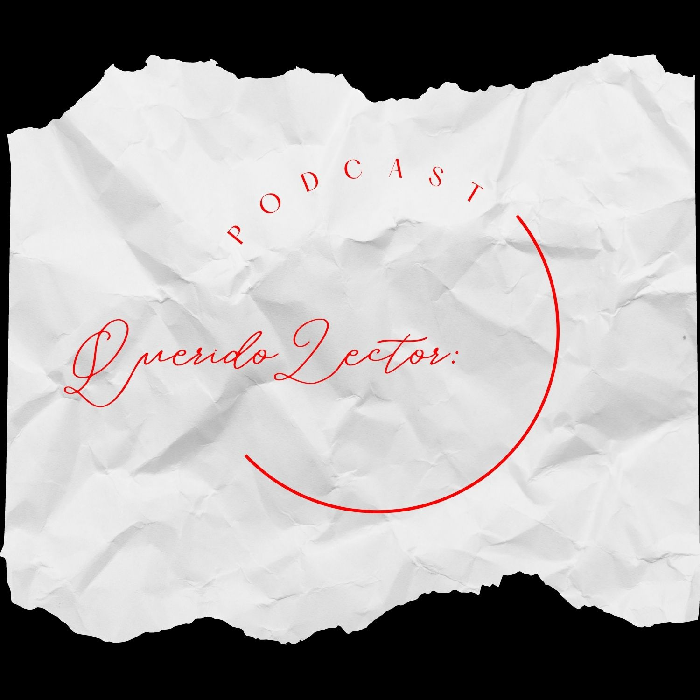

Descripción del podcast Querido lector:
Relatos, reflexiones y conversaciones. Este proyecto personal empezó como una necesidad genuina de contarle un contexto, un estado y/o un impulso a algún sujeto abstracto (llamese lector) y curar y ser curado mediante la expresión misma. Hoy es un trabajo serio y a largo plazo que no pretende otra cosa mas allá de la expresión poética y lírica del autor(es)/interprete(s), en nombre de lo que estos consideran belleza o trascendencia.